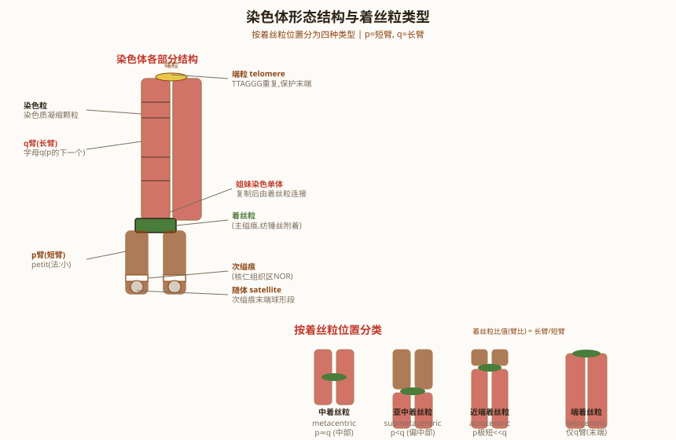
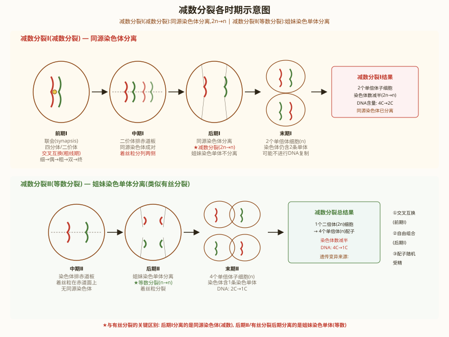
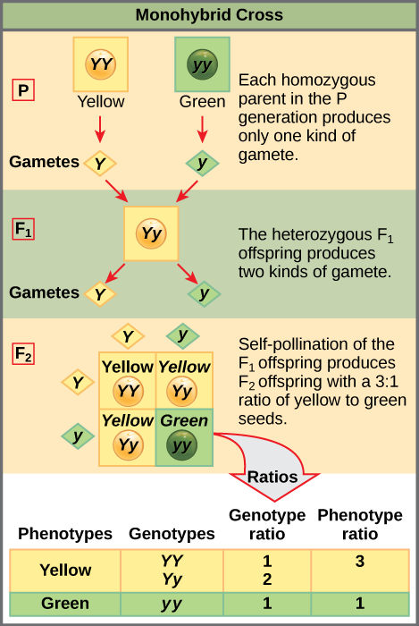
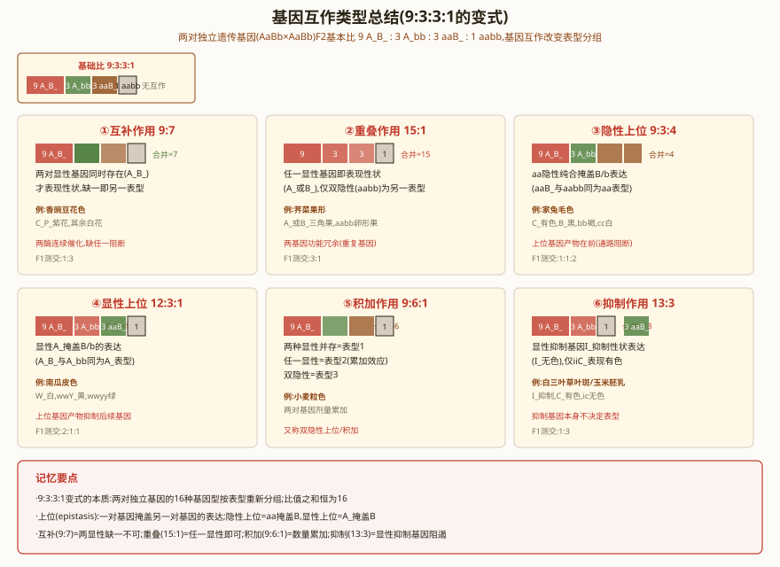
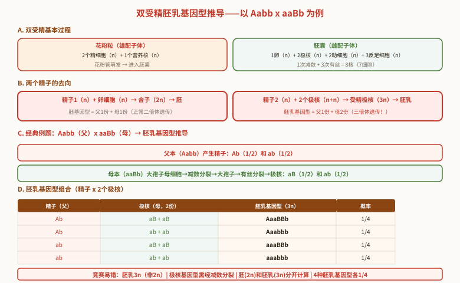

孟德尔遗传定律
〇、染色体形态结构与染色质类型（竞赛补充）
染色体的形态结构：染色体是遗传物质的载体，主要由DNA和蛋白质组成。每条染色体具有以下基本结构：
- 着丝粒（centromere）：染色体上缢缩的区域，是纺锤丝附着的位点。着丝粒将染色体分为两个臂。在细胞分裂中起着关键作用。
- 次缢痕（secondary constriction）：除着丝粒外的另一个缢缩区域，通常是核仁组织区（NOR）所在位置。
- 随体（satellite）：次缢痕末端部分的球形或圆柱形染色体片段，与核仁形成有关。
- 染色体臂：着丝粒将染色体分为短臂（p臂，petit）和长臂（q臂）。
根据着丝粒位置，染色体分为4种类型：
- 中间着丝粒染色体（metacentric）：着丝粒位于中部，两臂长度大致相等（臂比1.0~1.7）。
- 近中着丝粒染色体（submetacentric）：着丝粒偏于一侧，两臂长度差异明显（臂比1.7~3.0）。
- 近端着丝粒染色体（acrocentric）：着丝粒靠近一端，短臂极短（臂比3.0~7.0）。
- 端部着丝粒染色体（telocentric）：着丝粒位于染色体末端，只有一条臂（臂比>7.0）。人类核型中无此类。

常染色质 vs 异染色质：根据染色质在间期核中的形态和功能，分为两类：
- 常染色质（euchromatin）：染色较浅、结构松散的染色质区域，DNA包装程度低，基因转录活跃。主要分布在细胞核中央区域，在S期早期复制。
- 异染色质（heterochromatin）：染色较深、高度凝缩的染色质区域，DNA包装紧密，基因转录惰性。主要分布在着丝粒、端粒附近及核膜边缘，在S期晚期复制。
异染色质又分为两种类型：
- 组成型异染色质（constitutive heterochromatin）：在所有细胞类型中始终处于凝集状态，从不转录。如着丝粒区、端粒区和卫星DNA序列。具有结构稳定性。
- 兼性异染色质（facultative heterochromatin）：在某些细胞或发育阶段中凝集，在另一些条件下可松散并转录。其染色质松散时可以转录。经典例子：巴氏小体（Barr body）——雌性哺乳动物体细胞中失活的X染色体。
巴氏小体（Barr body）：雌性哺乳动物体细胞中，两条X染色体中有一条随机失活并高度凝缩形成巴氏小体。这是兼性异染色质（也称功能性异染色质）的典型代表。巴氏小体代表高度浓缩的失活X染色体，在间期核中可见为核膜边缘的深染小体。
巴氏小体数量与X染色体数的关系：巴氏小体数 = X染色体数 - 1。正常女性（XX）= 1个巴氏小体；正常男性（XY）= 0个；XXX女性 = 2个；XO Turner综合征 = 0个。
在女性正常体细胞中观察到染色体很深的巴氏小体，这种高度浓缩的X染色体代表着功能性异染色质（兼性异染色质）。
〇b、减数分裂详解（竞赛补充）
减数分裂（Meiosis）是性母细胞成熟时配子形成过程中发生的一种特殊有丝分裂，使体细胞染色体数目减半。例如：水稻2n=24→n=12，玉米2n=20→n=10，茶树2n=30→n=15。受精作用（n卵+n精→2n体）保证物种染色体数恒定。
减数分裂包括两次连续的细胞分裂（减数第一次分裂和减数第二次分裂），但DNA只复制一次。
减数第一次分裂前期I（Prophase I）的五个时期——这是竞赛高频考点：
- （1）细线期（leptonema）：染色体细长如线。由于间期染色体已经复制，每个染色体都是由共同的一个着丝点联系的两条染色单体所组成。
- （2）偶线期（zygonema）：各同源染色体分别配对，出现联会现象（synapsis）。联会了的一对同源染色体称为二价体（bivalent）。同源染色体在偶线期形成联会复合体（synaptonemal complex）。
- （3）粗线期（pachynema）：二价体逐渐缩短加粗。因为二价体包含了四条染色单体，故又称为四合体或四联体（tetrad）。在粗线期非姊妹染色单体间出现交换（crossing over），造成遗传物质的重新组合。
- （4）双线期（diplonema）：四分体继续缩短变粗，联会了的二价体因非姊妹染色体相互排斥而松懈，但仍被一至数个交叉（chiasmata）联结在一起。交叉现象是非姊妹染色体之间某些片段在粗线期发生交换的结果。
- （5）终变期（diakinesis）：染色体变得更为浓缩和粗短。交叉向二价体两端移动，逐渐接近末端，出现交叉端化（terminalization）。此时每个二价体分散在整个核内，可以一一区分开来，是鉴定染色体数目的最好时期。
联会复合体（Synaptonemal Complex, SC）：同源染色体联结在一起的一种特殊的固定结构。其主要成分是自我集合的碱性蛋白及酸性蛋白，由中央成分的两侧伸出横丝，使同源染色体得以固定在一起。
联会复合体出现在偶线期，成熟于粗线期，消失于双线期。
四分体（Tetrad）概念和计数：每一对联会的同源染色体中，含有四个染色单体，叫做一个四分体（从染色单体的角度考虑）。四分体个数 = 同源染色体对数（联会时）。例如人类有23对同源染色体，减数分裂前期I有23个四分体。

减数分裂各时期特征：
- 中期I：四分体排列在赤道板两侧，同源染色体对排列在赤道板上。
- 后期I：同源染色体彼此分开，向两极移动。注意：此时姐妹染色单体不分离。等位基因的分离发生在减数第一次分裂（2016年全国联赛）。
- 末期I：缢裂成两个子细胞，染色体减少一半（形成二分体/二分孢子）。
- 第二次分裂（前期II→中期II→后期II→末期II）：同有丝分裂。姐妹染色单体分离，形成四个单倍体子细胞（四分孢子）。
减数分裂的遗传学意义：①保证有性生殖时染色体数目的恒定，保证生物世代间遗传物质的稳定性和连续性；②各对同源染色体的非姐妹染色单体间的片段交换，为生物变异提供物质基础，利于生物生存及进化，为人工选择提供材料。
高等动物雌雄配子形成过程：
- 精子发生（Spermatogenesis）：精原细胞（2n）→有丝分裂→初级精母细胞（2n）→减数第一次分裂→次级精母细胞（n）→减数第二次分裂→精细胞（n）→变态发育→精子（n）。1个精原细胞→4个精子。
- 卵子发生（Oogenesis）：卵原细胞（2n）→有丝分裂→初级卵母细胞（2n）→减数第一次分裂→次级卵母细胞（n）+第一极体（n）→减数第二次分裂→卵细胞（n）+第二极体（n）。1个卵原细胞→1个卵细胞+3个极体（不对称分裂，保留营养）。
被子植物双受精和胚乳发育——被子植物特有的现象：
- 花粉粒（雄配子体）：成熟花粉粒含2个精细胞（n）和1个营养核（n）。
- 胚囊（雌配子体）：成熟胚囊含1个卵细胞（n）、2个极核（n）、2个助细胞（n）、3个反足细胞（n）。大孢子发育为胚囊需经1次减数分裂+3次有丝分裂形成8个核。
- 双受精过程：花粉管萌发，两个精子进入胚囊。1个精子+卵细胞→受精卵（2n）→胚；1个精子+2个极核→受精极核（3n）→胚乳。
- 胚乳：胚乳为新一代的早期发育提供营养。胚乳=2个极核+1个精细胞=3n。
胚乳基因型分析：胚乳基因型由两个极核（来自母本）和一个精细胞（来自父本）共同决定。如基因型为Aabb的玉米花粉给aaBb雌穗授粉，胚乳基因型有多种组合。
一、分离定律（Law of Segregation）
分离定律（孟德尔第一定律）：一对等位基因在配子形成时彼此分离，每个配子只含其中一个等位基因。F₂代表型比3:1（完全显性），基因型比1:2:1（AA:Aa:aa）。
孟德尔成功的关键：①选择严格自花授粉的豌豆（7对易于区分的单基因性状）；②从一对性状开始研究（简化法）；③进行定量统计分析（数学思维）；④设计测交验证假说。
测交（Test Cross）：将未知基因型的个体与隐性纯合子（aa）杂交。若后代全为显性表型→未知个体为AA；若后代显隐性1:1→未知个体为Aa。测交是遗传学中确定基因型的基本方法。
回交（Back Cross）：F₁与亲本之一杂交。根据回交亲本的不同，后代比例不同。
孟德尔分离定律的染色体基础：以一对同源染色体为例——等位基因位于同源染色体的相同位点上。在减数分裂时，同源染色体配对联会后，在减数第一次分裂后期彼此分离，分别进入不同的子细胞。每个配子只获得同源染色体中的一条，因而只含有一个等位基因。这就是分离定律的细胞学基础。
F1花粉鉴定法——直接验证分离定律的经典实验：
- 玉米籽粒的糯性、非糯性受一对等位基因控制，分别控制籽粒及其花粉粒中的淀粉性质。
- 非糯性：直链淀粉，Wx基因，碘液染色呈蓝黑色
- 糯性：支链淀粉，wx基因，碘液染色呈红棕色
- F1(Wxwx)花粉经碘液染色后，红棕色:蓝黑色 = 1:1
实验原理：F1杂合子(Wxwx)在减数分裂时，Wx和wx等位基因随同源染色体分离，分别进入不同花粉粒。花粉粒是单倍体配子体，直接表现其基因型。用碘液染色可直接观察配子分离比，从而验证分离定律。
2016年全国联赛考题：在某植物种群中，若隐性纯合子所占比例为0.0036%，则该隐性基因的频率为：q² = 0.0036%，故 q = √0.000036 = 0.006 = 0.6%。这是 Hardy-Weinberg 平衡的基本计算。

二、自由组合定律（Law of Independent Assortment）
自由组合定律（孟德尔第二定律）：两对（或更多对）等位基因在配子形成时，不同对的等位基因彼此独立地分配到配子中。F₂代双杂合子自交的表型比为9:3:3:1（全然显性，无互作）。
自由组合定律成立的条件：①两对基因位于不同染色体上（或位于同一染色体上但距离足够远，重组率=50%）；②各对等位基因之间为完全显性关系。
概率计算基础：
- 乘法原理：独立事件同时发生的概率=各事件概率的乘积。如AaBb自交后代为aabb的概率=1/4×1/4=1/16。
- 加法原理：互斥事件中任一发生的概率=各事件概率之和。
- 二项式展开：(a+b)^n可用于计算n个后代中各种表型组合的概率。
三、基因互作（Gene Interaction）
基因互作是指非等位基因之间的相互作用，导致F₂表型比例偏离经典9:3:3:1。但注意：基因互作不改变基因型分离比，只改变表型比。所有互作比例都是9:3:3:1的变形。
- 互补作用（9:7）：两个显性基因同时存在才表现某种性状。如香豌豆花色：C和P同时存在→紫色花；缺任一→白色花。F₂：9(C_P_):7(3C_pp+3ccP_+1ccpp)。
- 隐性上位（9:3:4）：隐性纯合基因型对另一基因有上位效应。如小鼠毛色：A_→刺鼠色，aa→黑色，但cc→白化（无论A基因型如何）。F₂：9A_C_:3aaC_:4(3A_cc+1aacc)。
- 显性上位（12:3:1）：显性等位基因对另一基因有上位效应。如南瓜果皮颜色：W_→白色（无论Y基因型），wwY_→黄色，wwyy→绿色。F₂：12(W_):3(wwY_):1(wwyy)。
- 重叠作用（15:1）：两个基因中任一有显性等位基因即表现相同性状。如荠菜果形：T₁_或T₂_→三角形，t₁t₁t₂t₂→心形。F₂：15(T₁_或T₂_):1(t₁t₁t₂t₂)。
- 抑制作用（13:3）：一个显性基因抑制另一个显性基因的表达。如鸡羽毛颜色：I_→白色（抑制C），iiC_→有色，iicc→白色。F₂：13(I_或iicc):3(iiC_)。

四、显性类型与致死基因
显性的类型：
- 完全显性（Complete Dominance）：Aa表型与AA相同（如孟德尔的豌豆性状）。
- 不完全显性（Incomplete Dominance）：Aa表型介于AA和aa之间（如金鱼草花色：RR红×rr白→Rr粉色）。F₂表型比=基因型比=1:2:1。
- 共显性（Codominance）：两个等位基因在杂合子中同时表达（如ABO血型中的I^A I^B→AB型，红细胞表面同时有A和B抗原；MN血型中L^M L^N→MN型）。
- 超显性（Overdominance）：杂合子表型优于任一纯合子（如镰刀型细胞贫血症杂合子Hb^A Hb^S→抗疟疾优势）。
致死基因（Lethal Allele）：纯合状态下导致个体死亡的等位基因。隐性致死（如小鼠黄色毛色A^Y基因——A^Y A^Y纯合致死，A^Y A→黄色，AA→灰色）导致F₂比例从3:1变为2:1（黄色:灰色）。
致死基因详解（竞赛PDF补充）——1905年法国学者L·居埃诺首先报道小鼠的黄色突变型从来没有育成过纯种。
AY黄色鼠致死基因的遗传：
- AY基因在控制毛皮颜色上是显性的（AYA→黄色），但在致死这个表型上必须是纯合状态(AYAY)才能实现。
- AYAY个体在胚胎期死亡。存活黄色鼠均为杂合子AYa。
- 从致死作用方面说具有隐性效应——因为在子一代的个体中，存活的比死亡的是3:1，死亡的表型应该是隐性的，因此称之为隐性致死（recessive lethal）。
- 黄色鼠(AYa)×黄色鼠(AYa)→后代1 AYAY(致死):2 AYa(黄色):1 aa(黑色)→存活比例为2黄色:1黑色。
复等位基因致死体系（IBO竞赛题）：小鼠常染色体上复等位基因：AY=黄色（纯质致死）、A=鼠色、a=非鼠色（黑色）。列在前面的基因对列在后面的基因为显性。AYAY个体在胚胎期死亡。
- 杂交①AYa(黄)×AYa(黄)：子代黄色个体基因型均为AYa（相同），黑色个体均为aa纯合体。
- 杂交②AYa(黄)×AYA(黄)：子代基因型为 AYAY(致死)、AYA(黄色)、AYa(黄色)、Aa(鼠色)。存活个体中黄色:鼠色 = 2:1。注意：此杂交不会产生黑色 aa 个体（因为一方亲本为 AYA，只能产生 AY 和 A 两种配子，无法产生 a+a 的组合）。
狗的无毛性状（23届国际奥赛）：杂合基因型Hh产生无毛性状，正常狗为纯合隐性hh。HH基因的纯合幼犬通常出生即为死胎（显性致死效应）。
- 无毛(Hh)×无毛(Hh)→1HH(致死):2Hh(无毛):1hh(正常)→存活2无毛:1正常
- 无毛(Hh)×正常(hh)→1Hh(无毛):1hh(正常)→1无毛:1正常
五、复等位基因与ABO血型
复等位基因（Multiple Alleles）：在群体中，一个基因座位存在两个以上的等位基因。但每个个体最多只能携带其中两个等位基因（二倍体）。经典例子：ABO血型系统。
ABO血型（9q34，糖基转移酶基因）：
- I^A等位基因→α-1,3-N-乙酰半乳糖胺转移酶→在H抗原上添加GalNAc→A抗原
- I^B等位基因→α-1,3-半乳糖转移酶→在H抗原上添加Gal→B抗原
- i等位基因→无酶活性→仅H抗原→O型
- 显性关系：I^A和I^B对i为完全显性，I^A和I^B之间为共显性
ABO血型的基因型和表型：A型（I^A I^A, I^A i）、B型（I^B I^B, I^B i）、AB型（I^A I^B）、O型（i i）。
孟买血型（Bombay Phenotype）：H抗原缺乏（hh基因型，FUT1基因突变）→即使有I^A/I^B等位基因，也无法合成A或B抗原→表型为O型。证明H抗原是A和B抗原的前体。
镶嵌显性（Mosaic Dominance）：两种等位基因在杂合体内的不同部位分别表现出显性作用的遗传现象，是一种特殊的共显性现象。与共显性的区别：共显性是在同一细胞中两个等位基因产物同时存在，而镶嵌显性是在不同部位/组织分别表现。
遗传异质性（Genetic Heterogeneity）——竞赛高频概念：
- 不同基因座位的突变可以产生相同的表型。即同一种疾病/性状可由不同基因的突变引起。
- 经典例子：先天性聋哑——由不同基因座的隐性突变引起。如基因型a1a1A2A2（基因座1突变）和A1A1a2a2（基因座2突变）的先天性聋哑患者婚配，其孩子基因型为A1a1A2a2，在两个基因座上均有显性正常基因，因此孩子听力正常。
- 2019年全国联赛：先天原因的聋哑人和正常人结婚生育的后代一般都是正常人。一对先天性聋哑夫妇生下5个孩子全正常，最简单的解释是——可能聋哑都是隐性性状，有很多种基因突变都可能导致聋哑（遗传异质性）。
- 2019年江苏初赛：两个先天性聋哑的父母，生的孩子并不聋哑，这种情况可能属于遗传异质性。
表型模写（Phenocopy / 表型模拟）：环境所诱导的表型类似于基因型所产生的表型，但是不能遗传。例如孕妇服用"反应停"（thalidomide）可导致胎儿短肢畸形，症状与隐性遗传病霍-奥（Holt-Oram）综合征类似，但不会遗传给下一代。
外显率与表现度：
- 外显率（Penetrance）：一个基因型在群体中表现一定表型的个体所占百分比。如果有些个体表现表型而另一些不表现，称为不完全外显。例如果蝇间断翅脉基因i的外显率只有90%。
- 表现度（Expressivity）：一定环境下，某一突变个体基因型表达的差异程度。即具有相同基因型的不同个体表型严重程度不同。
六、本节核心总结
七、卡方检验与遗传学数据分析
卡方检验（χ² Test）是遗传学中检验观察值与理论值是否符合预期比例的标准统计方法。
χ² = Σ[(O-E)²/E]，其中O为观察值（Observed），E为理论预期值（Expected）。自由度（df）= 表型类别数 - 1（对于固定比例的假设检验）。
应用实例：F₂代观察值：显性84，隐性16（共100）。理论预期3:1→显性75，隐性25。χ² = (84-75)²/75 + (16-25)²/25 = 81/75 + 81/25 = 1.08 + 3.24 = 4.32。df=1，查表P≈0.038（P<0.05→差异显著→偏离3:1）。
基因互作的其他类型：
- 加性效应（9:6:1）：两个显性基因有加性效应。如南瓜果形：A_B_→盘形（双显），A_bb或aaB_→球形（单显），aabb→长形（双隐）。
- 重复隐性上位（9:3:4的变体）：两个基因的隐性纯合子都产生相同表型（如双隐性都白化）。
- 多基因遗传（Polygenic Inheritance）：多个基因共同控制一个数量性状（如身高、肤色、产量）。F₂表现为连续分布而非离散表型比例。Nilsson-Ehle的小麦粒色实验（三对基因→粒色从深红到白色7种表型，呈1:6:15:20:15:6:1）。
八、遗传学中的概率计算进阶
条件概率在遗传学中的应用：
- Bayes定理在遗传咨询中的应用：计算携带者概率。如常染色体隐性遗传病，正常表型个体为携带者的概率。例：一对表型正常的夫妇，已知女方为携带者（Aa），男方表型正常但有一个患病兄弟，求后代患病风险。
- 男方父母均为携带者（Aa×Aa→子女概率：1/4AA, 1/2Aa, 1/4aa）。男方表型正常→排除aa→正常表型中AA:Aa=1/3:2/3→携带者概率=2/3。后代患病概率=1(女方为携带者)×2/3(男方为携带者)×1/4=1/6。
二项分布与遗传学计算：
- n个后代中恰好有k个为某种表型的概率：P(k) = C(n,k) × p^k × (1-p)^(n-k)。
- 例：Aa×Aa夫妇计划生3个孩子，求恰好2个表型正常、1个患病的概率。p(正常)=3/4，p(患病)=1/4。P(2正常1患病)=C(3,2)×(3/4)²×(1/4)¹=3×9/16×1/4=27/64≈0.422。
基因互作进阶分析：
- 加性效应（Duplicate genes with additive effect, 9:6:1）：A_B_→盘形，A_bb或aaB_→球形，aabb→长形。实际上是两个基因独立分配但表型有加性效应。
- 显性抑制（Dominant suppression, 13:3）：I_C_和I_cc和iicc→白色（I抑制C），iiC_→有色。13:3。
- 基因互作比例的推导公式：所有互作比例都是9:3:3:1的变形，四种基因型组合（A_B_:A_bb:aaB_:aabb=9:3:3:1）合并为不同表型类别。
九、数量遗传学基础
数量性状（Quantitative Trait）：由多基因和环境因素共同决定的连续变异性状，如身高、体重、产量、IQ等。数量性状的遗传分析不能用经典孟德尔方法，需要用统计方法。
数量遗传学的基本参数：
- 表型方差（V_P） = V_G（遗传方差）+ V_E（环境方差）+ V_GE（基因型×环境互作方差）。
- 遗传方差（V_G） = V_A（加性遗传方差）+ V_D（显性方差）+ V_I（上位性方差）。
- 遗传率（Heritability）：广义遗传率 H² = V_G / V_P；狭义遗传率 h² = V_A / V_P。h²是育种中选择响应的重要参数（R = h²S，R为选择响应，S为选择差）。
- 近交系数F对数量性状的影响：近交使群体均值可能下降（近交衰退），群体方差变化——群间方差增大，群内方差减小。
QTL作图和关联分析：
- QTL（数量性状基因座）图谱：利用分子标记（SNP、SSR等）与表型变异的连锁关系，定位控制数量性状的染色体区域。QTL定位的精度受群体大小和标记密度限制。
- GWAS（全基因组关联分析）：在自然群体中检测SNP与表型的关联，无需构建分离群体。可精确定位（单基因水平），但需要大量样本和多重检验校正。
多基因遗传的表型分布：n对独立分配的等显性基因→F₂表型呈二项分布（a+b)^(2n)展开。n=1→3种表型（1:2:1），n=2→5种表型（1:4:6:4:1），n=3→7种表型（1:6:15:20:15:6:1）。Nilsson-Ehle的小麦粒色实验是经典验证。
十、遗传学中的非孟德尔遗传现象
非孟德尔遗传（Non-Mendelian Inheritance）：不符合经典孟德尔定律的遗传模式。
- 母系遗传（Maternal Inheritance）：细胞质基因（线粒体DNA、叶绿体DNA）仅通过母本传递给后代。正反交结果不同（总是母本表型）。如紫茉莉的叶色斑驳（叶绿体突变）、人类线粒体疾病（LHON、MELAS）。
- 基因组印记（Genomic Imprinting）：亲本来源特异性的单等位基因表达。虽然基因型相同，但表型取决于等位基因来自父方还是母方。如Prader-Willi综合征（父源15q11-q13缺失）和Angelman综合征（母源同一区域缺失）→同一染色体区域，不同亲本缺失→完全不同疾病。
- 三核苷酸重复扩增（动态突变）：重复数在世代间可能增加→疾病严重程度增加+发病年龄提前（遗传早现，anticipation）。如亨廷顿舞蹈症（CAG重复）、脆性X综合征（CGG重复）、强直性肌营养不良（CTG重复）。
- 单亲二体（Uniparental Disomy, UPD）：一对同源染色体的两个拷贝都来自同一亲本。可导致印记疾病（如父源UPD 15→Angelman综合征，母源UPD 15→Prader-Willi综合征）。
表观等位基因（Epiallele）：DNA序列相同但表观遗传修饰（DNA甲基化）不同的等位基因。如植物中Linaria vulgaris花色变异（Lcyc基因的甲基化差异→对称花 vs 辐射花）。
十一、遗传学实验设计与数据分析
遗传学实验设计的基本原则：
- 正反交（Reciprocal Cross）：A♂×B♀和B♂×A♀。正反交结果相同→常染色体遗传；正反交结果不同→伴性遗传或细胞质遗传。正反交是判断遗传模式的第一步。
- 测交（Test Cross）：与隐性纯合子杂交，根据后代表型比例推断被测个体的基因型。测交1:1→单基因杂合子；测交1:1:1:1→双基因杂合子（独立分配）。
- 三点测交：三杂合子与三隐性纯合子测交，同时确定三个基因的顺序和距离。
- 互补测验（Complementation Test / Cis-Trans Test）：两个隐性突变是否为同一基因的等位基因。两个纯合突变体杂交→F₁表型正常（互补）→突变位于不同基因（非等位基因）；F₁仍为突变表型（不互补）→突变位于同一基因（等位基因）。互补测验是确定基因功能单位（顺反子/cistron）的经典方法。
遗传学数据的统计学分析：
- χ²检验→判断观察值与理论值是否一致。P<0.05→差异显著→拒绝假设。注意：χ²检验不能证明假设正确，只能说明数据与假设不矛盾。
- LOD值（Logarithm of Odds）→连锁分析中判断两个基因座是否连锁。LOD>3→连锁（1000:1 odds）；LOD<-2→不连锁。LOD值分析是构建遗传连锁图谱的基础。
十二、非孟德尔遗传与复杂遗传模式
非孟德尔遗传（Non-Mendelian Inheritance）：
- 母体效应（Maternal Effect）：子代表型由母体基因型决定，而非子代自身基因型。经典例子：椎实螺（Limnaea）壳旋方向（右旋D对左旋d为显性，但子代表型由母体基因型决定→母体卵细胞质中基因产物影响早期胚胎发育）。DD/Dd母体→子代全右旋（无论子代基因型）；dd母体→子代全左旋。延迟一代的表型分离。
- 细胞质遗传（Cytoplasmic Inheritance）：细胞质基因（线粒体DNA、叶绿体DNA）决定的性状。母系遗传→仅通过卵细胞质传递。紫茉莉（Mirabilis jalapa）花斑叶→叶绿体DNA突变→母系遗传。酵母小菌落（petite）突变→mtDNA大片段缺失→呼吸缺陷。
- 基因印迹（Genomic Imprinting）：等位基因的表达取决于亲本来源（父源或母源等位基因被表观遗传标记沉默）。Prader-Willi综合征（PWS）→父源15q11-q13缺失→母源等位基因被印迹沉默→无法表达；Angelman综合征（AS）→母源15q11-q13缺失→父源等位基因被印迹沉默。同一位点缺失→父母来源不同→完全不同疾病。
- 三核苷酸重复扩增（Trinucleotide Repeat Expansion）：动态突变→重复序列在世代间扩增→遗传早现（anticipation）→发病年龄逐代提前、症状逐代加重。Huntington病（HD）→HTT基因CAG重复（编码polyQ）→正常<35，致病>40。脆性X综合征（Fragile X）→FMR1基因5'UTR CGG重复>200→甲基化沉默→智力障碍。
数量性状与多基因遗传：
- 数量性状（Quantitative Trait）：连续变异，受多基因控制，受环境影响大。如身高、体重、IQ、血压、牛奶产量。与质量性状（离散变异，单基因/寡基因）相对。
- 多基因假说（Polygenic Hypothesis / Nilsson-Ehle假说）：多个独立分配的基因对同一性状有加性效应，每个基因的效应较小。小麦粒色实验（Nilsson-Ehle, 1909）→3个基因控制→F₂表型呈1:6:15:20:15:6:1分布（正态分布近似）。
- 遗传力（Heritability）：H²（广义遗传力）= V_G / V_P = V_G / (V_G + V_E)；h²（狭义遗传力）= V_A / V_P = V_A / (V_A + V_D + V_I + V_E)。h²可用于预测选择响应：R = h² × S（R为选择响应，S为选择差）。
- QTL定位（Quantitative Trait Locus Mapping）：通过分子标记（SNP、SSR）与表型关联分析→定位影响数量性状的基因组区域。GWAS（全基因组关联研究）→大规模人群研究→鉴定与疾病/性状相关的SNP位点。
连锁不平衡（LD）与背景选择（竞赛高频考点）
连锁不平衡（Linkage Disequilibrium, LD）：
- 定义：在某一群体中，分属两个或两个以上基因座的等位基因同时出现在一条染色体上的几率，高于随机出现的频率。LD是等位基因或遗传标记在种群中表现出高于或低于由等位基因随机频率而预测的单倍型频率。
- LD的度量：D = P(AB) - P(A)P(B)。若D=0，则两个位点处于连锁平衡（linkage equilibrium）；若D≠0，则存在连锁不平衡。标准化度量：D' = D/D_max，r² = D²/(p_A·p_a·p_B·p_b)。
- LD衰减的原因：①重组（recombination）——重组会打破LD，重组率越高LD衰减越快；②突变发生年代久远——突变越古老，重组次数越多，LD越弱；③多次独立突变（奠基者效应多样）——同一基因不同突变起源，标记不共分离。
- LD的竞赛应用：①定位致病基因——通过全基因组关联分析（GWAS），检测与疾病关联的SNP标记；②推断群体历史——LD衰减模式反映有效群体大小和重组历史；③选择信号检测——选择性清除（selective sweep）导致局部LD增强。
- HLA区域的LD：人类白细胞抗原（HLA）不同基因座位的某些基因经常连锁在一起遗传，使某些单体型在群体中呈现较高频率，从而引起连锁不平衡。这是竞赛中LD的经典实例。
背景选择（Background Selection）：
- 定义：背景选择是连锁选择的一种形式。在这一过程中，有害突变受到负选择（purifying selection），使得连锁的其它突变（包括中性突变）也被一并清除。
- 核心特征：①重组会降低背景选择的强度——重组使有害突变与正常基因分离，从而减弱背景选择；②背景选择会降低遗传多态性——负选择清除有害突变的同时，也清除了与之连锁的中性变异；③有性生殖物种中背景选择相对较少（因为有重组），而无性生殖物种中背景选择更强；④哺乳动物Y染色体上的背景选择比常染色体强——Y染色体存在非同源区段，突变后即可表现，而常染色体隐性与显性不完全等同。
- 与选择性清除（Selective Sweep）的区别：选择性清除是有利突变的正选择带动连锁中性变异频率上升（搭车效应/hitchhiking），而背景选择是有害突变的负选择清除连锁变异。
非等位基因互作：5种修饰比例的完整推导（竞赛必考）
基因互作的基本原理：两对非等位基因（A/a和B/b）共同控制同一性状，由于其相互作用方式不同，F₂代表型分离比由经典的9:3:3:1修饰为各种比例。理解这些修饰比例的生化基础是解题关键。
| 互作类型 | F₂比例 | A_B_ | A_bb | aaB_ | aabb | 生化机制 | 经典实例 |
|---|---|---|---|---|---|---|---|
| 互补作用 | 9:7 | 9 | 3 | 3 | 1 | 两个基因编码不同步骤的酶，需两者同时存在才能完成代谢通路 | 香豌豆花色（C_P_紫色）、玉米糊粉层色素 |
| 隐性上位 | 9:3:4 | 9 | 3 | 3+1=4 | （并入aa__） | 隐性纯合（aa）对B/b位点有上位效应，aa存在时B/b不表达 | 小鼠毛色（aa__白化）、狗毛色（bb__黄色） |
| 显性上位 | 12:3:1 | 9+3=12 | （并入A___） | 3 | 1 | 显性基因A对B/b位点有上位效应，有A存在时B/b不表达 | 南瓜皮色（W___白色）、燕麦颖片色 |
| 重叠作用 | 15:1 | 9+3+3=15 | （并入） | （并入） | 1 | 两个基因功能相同，任一显性即产生表型 | 荠菜果形（三角形/卵圆形） |
| 抑制作用 | 13:3 | 9+3+1=13 | （并入I___） | 3 | （并入I___） | 显性抑制基因I抑制另一基因C的表达 | 鸡羽色（I___白色）、洋葱鳞茎色 |
| 加性作用 | 9:6:1 | 9 | 3+3=6 | （合并） | 1 | 两个基因的显性等位基因对表型有加性贡献 | 小麦粒色、南瓜果重 |
9:7互补作用→9:3:4隐性上位的推导过程：
- 从9:7→9:3:4的转变：当互补作用中，aa不仅导致B通路阻断，还使A通路产物也失效（即aa对所有色素合成都有上位效应），此时aaB_（3）和aabb（1）因aa隐性上位而表型相同，合并为4，形成9:3:4。注意：9:3:4中"4"是3+1=4（aaB_ + aabb = 4，均被上位基因aa抑制）。
- 从9:3:4→12:3:1的转变：当上位基因是显性（A）而非隐性（a）时，有A存在B/b都不表达，9(A_B_)+3(A_bb)=12，剩下3(aaB_):1(aabb)，形成12:3:1。
血型系统：ABO/MN/Rh/孟买血型基因型-表型对应（竞赛必背）
四大血型系统的基因型-表型-抗原-抗体完整对应表：
| 血型系统 | 基因/等位基因 | 基因型 | 表型 | 红细胞抗原 | 血清抗体 | 遗传方式 |
|---|---|---|---|---|---|---|
| ABO （9q34） | I^A（显性） | I^A I^A, I^A i | A型 | A抗原 | 抗B | 复等位基因 I^A=I^B>i |
| I^B（显性） | I^B I^B, I^B i | B型 | B抗原 | 抗A | ||
| I^A, I^B（共显性） | I^A I^B | AB型 | A+B抗原 | 无 | ||
| i（隐性） | ii | O型 | H抗原 | 抗A+抗B | ||
| MN （4q28） | L^M, L^N（共显性） | L^M L^M | M型 | M抗原 | 无 | 共显性 |
| L^M L^N | MN型 | M+N抗原 | 无 | |||
| L^N L^N | N型 | N抗原 | 无 | |||
| Rh （1p36） | D（显性）、d（隐性） | DD, Dd | Rh+ | D抗原 | 无（需致敏） | 显性遗传 |
| （常见简化） | dd | Rh- | 无D抗原 | 无（致敏后抗D） | ||
| 孟买血型 （19q13） | H/h（FUT1基因） | hh（罕见） | O型（假） | 无H抗原 | 抗H | 隐性遗传 |
孟买血型（Bombay phenotype）的竞赛要点：
- H抗原前体：ABO血型抗原的合成需要H抗原作为前体。H抗原由FUT1基因（H基因）编码的岩藻糖基转移酶合成。常见基因型HH或Hh→有H抗原→ABO血型正常表达。罕见基因型hh→无H抗原→即使有I^A或I^B基因，也无法合成A或B抗原→表现为"假O型"。
- 孟买血型个体：血清中含有抗A、抗B和抗H抗体，只能接受其他孟买血型个体的血液。
- 竞赛考点：hh基因型对I^A/I^B有上位效应。若父母一方为孟买血型（hh），另一方正常（HH），子代全为Hh→正常ABO表型。若父母均为Hh杂合子，子代1/4为hh→可能出现"父母非O型却生出O型孩子"的假象，这是家系分析中的经典考点。
双受精过程中胚乳基因型推导（竞赛高频计算）
被子植物双受精的基本过程：
- 1个精子（n）+ 卵细胞（n）→ 合子（2n）→ 胚
- 1个精子（n）+ 2个极核（n+n=2n）→ 受精极核（3n）→ 胚乳（三倍体，3n）
- 双受精是被子植物特有的现象，胚乳为新一代的早期发育提供营养。
胚乳基因型的推导方法：
- 核心原则：胚乳由1个精子（父方基因组）+ 2个极核（母方基因组）组成。因此胚乳的基因型 = 精子基因型 + 2个极核的基因型。注意：2个极核的基因型相同（均由同一大孢子母细胞经减数分裂和有丝分裂产生）。
- 经典题型1：基因型为Aabb的玉米花粉（父本）给基因型为aaBb的雌穗授粉。父本产生两种精子：Ab和ab各1/2。母本（aaBb）的大孢子母细胞→减数分裂→大孢子→有丝分裂→胚囊，极核基因型有两种：aB和ab各1/2。胚乳=精子+2个极核，组合情况：
| 精子（父） | 极核（母） | 胚乳基因型 |
|---|---|---|
| Ab | aB + aB | AaaBBb |
| Ab | ab + ab | Aaabbb |
| ab | aB + aB | aaaBBb |
| ab | ab + ab | aaabbb |
- 经典题型2：某植物种子胚乳基因型为AaaBbb，父本为AaBb，求母本基因型。胚乳中母方贡献2份（来自极核），父方贡献1份（来自精子）。分析：Aaa→父方A，母方aa；Bbb→父方b，母方Bb。因此母本基因型应为aaBb（含a和B、b）。
- 竞赛易错点：①胚乳是3n不是2n——许多学生误用二倍体遗传规律计算；②极核基因型由大孢子母细胞决定，不是由母本体细胞基因型直接决定（需经过减数分裂）；③胚乳基因型与胚基因型不同——胚（2n）和胚乳（3n）需分别计算。

必背考点汇总
- 分离定律：F₂表型3:1，基因型1:2:1，测交1:1
- 自由组合：F₂双杂合子自交9:3:3:1，测交1:1:1:1
- 基因互作：互补9:7、隐性上位9:3:4、显性上位12:3:1、重叠15:1、抑制13:3
- 显性类型：完全显性、不完全显性(1:2:1)、共显性(AB型)、超显性(杂合优势)
- 致死基因：隐性致死→F₂比例2:1
- ABO血型：I^A/I^B共显性，对i显性，孟买血型(hh→O型)
- 连锁不平衡(LD)：D≠0→非随机关联，重组/年代/突变次数影响LD衰减
- 背景选择：有害突变负选择→连锁中性变异清除→降低多态性
- 胚乳基因型：3n=精子(n)+2极核(2n)，注意与胚(2n)区分
高中教材衔接 · 课标对应
人教版必修2第1章"遗传因子的发现"——孟德尔豌豆杂交实验、分离定律（一对相对性状 F₂ 代 3:1）、自由组合定律（两对相对性状 F₂ 代 9:3:3:1）、测交实验验证。具体到小节：必修2第1章第1节"孟德尔的豌豆杂交实验（一）"——一对相对性状的杂交实验、分离定律；第1章第2节"孟德尔的豌豆杂交实验（二）"——两对相对性状的杂交实验、自由组合定律、测交。
2025 / 2026 联赛 · 初赛真题链接
本章重难点深度解析
重难点 1：孟德尔定律的概率基础与棋盘式计算
- 概率基础：① 加法原理（OR 事件，互斥）：P(A ∪ B) = P(A) + P(B)；② 乘法原理（AND 事件，独立）：P(A ∩ B) = P(A) × P(B)；③ 条件概率 P(A|B) = P(A∩B)/P(B)；④ 贝叶斯公式 P(B|A) = P(A|B)P(B)/P(A)。遗传学概率计算的"两大基石"。
- 二项式展开与配子类型：n 对独立基因 AaBb...Aa 的杂合子自交，后代表型分布按二项式 (1:2:1)^n 展开。例如：① 1 对杂合基因（n=1）：表型 3:1，基因型 1:2:1；② 2 对（n=2）：表型 9:3:3:1，基因型 9 种；③ 3 对（n=3）：表型 27:9:9:9:3:3:3:1，基因型 27 种；④ n 对（n）：表型 2^n（3:1）^n 展开，基因型 3^n 种。
- 配子类型的计算：n 对独立基因的杂合子产生 2^n 种配子（各 1/2^n）。例如 AaBbCc → 8 种配子 ABC、ABc、AbC、Abc、aBC、aBc、abC、abc 各 1/8。配子种数对 n 增长很快（n=5 → 32 种，n=10 → 1024 种）。
- 测交（test cross）：用隐性纯合体（aabb...）与待测个体杂交，根据后代表型直接读出待测个体的配子类型。① 测交个体基因型是单隐性纯合 aabb...；② 后代每种表型比例 = 测交亲本中该配子的比例；③ 测交可揭示连锁——重组型配子比例 < 50%（即"不完全连锁"）。
- 回交与自交：① 回交（backcross）—— F₁ 与亲本之一杂交，测出亲本中纯合隐性表型为 1/2（如 F₁ AaBb × aaBb → 1 AaBb : 1 Aabb : 1 aaBb : 1 aabb）；② 自交（self-cross）—— F₁ AaBb 自交 → 9:3:3:1（F₂）；③ 兄妹交（sibcross）—— 同窝兄妹的杂交，常用于小动物遗传学。
重难点 2：基因互作模式与生化基础
- 9:7 互补（complementary）：两个基因分别催化反应的不同步骤（A 基因→中间产物 X；B 基因→中间产物 X → 终产物 Y），只有 A_B_ 同时存在才能完成反应。例子：① 豌豆花色（白花 vs 紫花）—— A 编码花青素前体合成酶，B 编码前体→花青素酶；② 玉米糊粉层颜色—— A1（A1_→花青素前体）、A2（A2_→花青素前体）、C（C_→前体→紫色）；③ 老鼠毛色（致死黄 agouti）：A_B_ 为野生色（带黄带黑），A_bb 或 aaB_ 或 aabb 都不行。
- 9:3:4 隐性上位（recessive epistasis）：一对基因的隐性纯合（如 bb）对另一对基因（A/a）有上位效应，即当上位基因隐性纯合时，被上位基因无论显性还是隐性都不表达。典型：① 小鼠毛色—— A_C_ 刺鼠色、aaC_ 黑色、A_cc 和 aacc 都白化（cc 抑制色素合成）；② 狗毛色—— A_B_ 黑色、aaB_ 棕色、A_bb 和 aabb 都黄色（bb 抑制色素沉着）。注意"9:3:4"的"4"是 3+1（A_bb + aabb）= 4 都被 bb 抑制为同表型（若上位基因为 b）。
- 12:3:1 显性上位（dominant epistasis）：一个基因的显性等位基因（如 W）对另一对基因（Y/y）有上位效应，即只要有 W 存在，Y/y 都不表达。典型：① 南瓜皮色—— W_Y_ 和 W_yy 都为白色（W 显性上位抑制色素基因 Y/y 表达），wwY_ 为黄色，wwyy 为绿色。12(W_Y_ + W_yy) : 3(wwY_) : 1(wwyy)；② 燕麦颖片颜色—— B_ 黑色（对 Y 上位），bbY_ 黄色，bbyy 白色。
- 13:3 抑制基因（inhibitor）：存在显性抑制基因 I，当 I 存在时抑制另一基因 C 的表型表达。比例推导：9 I_C_ + 3 I_cc + 1 iicc = 13 表现为抑制表型（白色/无色），只有 3 iiC_ 表现为有色表型。即 13(I_C_ + I_cc + iicc) : 3(iiC_)。典型例子：鸡羽色—— I_ 抑制色素合成（白色），iiC_ 有色，iicc 白色。注意与 15:1 重叠作用的区别：15:1 是两个基因功能相同（任一显性即产表型），13:3 是一个基因专门抑制另一个基因。
- 15:1 重复基因（duplicate dominant）：两个基因任一显性都足以产生相同表型。例子：① 荠菜果形—— A_B_、A_bb、aaB_ 都三角形（triangular，3+3+9=15），aabb 卵圆形（1）；② 豌豆豆荚色。
- 9:6:1 加性（additive）：两个基因的显性都贡献到表型数值。例子：① 小麦粒色——A_B_ 深红（3+3+9=9 但更深的色）、A_bb + aaB_ 中红（3+3=6）、aabb 白（1）；② 玉米穗长、南瓜果重等多基因性状。
重难点 3：致死基因与孟德尔比例的偏离
- 隐性致死：隐性纯合子致死，杂合子和显性纯合子存活。以 A 对 a 完全显性为例，Aa × Aa → 1 AA : 2 Aa : 1 aa，若 aa 致死，则存活后代中 AA:Aa = 1:2（全部为 A_ 表型，3:1 比例消失）。经典例子是小鼠 A^Y 黄色基因：A^Ya × A^Ya → 1 A^YA^Y (致死) : 2 A^Ya (黄色) : 1 aa (黑色) → 存活后代表型比 黄色:黑色 = 2:1。注意：A^Y 对毛色是显性（A^Ya 即黄色），但对致死是隐性（需纯合 A^YA^Y 才致死），故称"隐性致死基因"。
- 配子致死（gametic lethal）：某基因型配子不能存活（如花粉致死），导致后代表型比偏离。例：玉米中某些染色体片段（"显性"片段在花粉中致死，柱头上正常）。
- 合子致死（zygotic lethal）：在胚胎/幼体期死亡，导致后代表型比偏离。除 aa 致死外，还有：Aa × Aa → 1 AA : 2 Aa : 1 aa → AA:Aa:aa = 1:2:0 → 全部 AA 或 Aa 出现；或者 9:3:3:1 → 9:3:3:0（A_B_、A_bb、aaB_、aabb，其中 aabb 致死）= 9:3:3 简化 → 3:1:1。
- 纯合致死与人类疾病：① 隐性纯合致死：Tay-Sachs 病（HEXA 突变，纯合 5 岁前死亡）、囊性纤维化（CFTR，纯合寿命 ~40）、镰状细胞贫血（HBB 纯合，纯合严重但可活到成年）；② 显性纯合致死：Huntington 病（纯合发病早、严重）；③ 胚胎致死染色体异常：45,X（Turner，多数自然流产）、三体（21 三体 Down 综合征可活，三体 18 Edwards 综合征、三体 13 Patau 综合征多在 1 岁内死亡）。
重难点 4：人类孟德尔遗传与系谱分析
- 家系（pedigree）分析要点：① 显性 vs 隐性：显性性状每代出现（垂直传递），隐性性状常隔代出现（水平"散落"）；② 常染色体 vs X 连锁：常染色体上男女发病率相等；X 连锁显性男患者的所有女儿都发病（父→女传递）；X 连锁隐性男患者多于女患者，女患者的父亲和儿子都患病；Y 连锁只有男性；③ 外显率（penetrance）和表现度（expressivity）—— 显性基因有时不外显（如 BRCA1 突变 80% 外显率）或表现度差异。
- 经典人类常染色体显性疾病：① Huntington 病（HTT 基因，CAG 三核苷酸重复扩展，4 号染色体，常染色体显性，纯合更严重）；② 家族性高胆固醇血症（LDLR，常染色体显性，杂合轻度、纯合严重）；③ 软骨发育不全（FGFR3，常染色体显性，杂合矮小、纯合致死）；④ 马凡综合征（FBN1，常染色体显性，结缔组织病）。
- 经典人类常染色体隐性疾病：① 囊性纤维化（CFTR，氯离子通道，ΔF508 突变最常见）；② 苯丙酮尿症 PKU（PAH）；③ Tay-Sachs 病（HEXA）；④ 镰状细胞贫血（HBB，Glu6Val）；⑤ 地中海贫血（α/β 珠蛋白基因突变）；⑥ 白化病（tyrosinase）。
- X 连锁隐性疾病：① 红绿色盲（OPN1LW/OPN1MW，约 8% 男性发病，0.5% 女性）；② 血友病 A（FVIII 基因）、B（FIX 基因）；③ 杜氏肌营养不良（DMD，Dystrophin 基因，男孩 3500 人中 1 人）；④ G6PD 缺乏症（蚕豆病）；⑤ Lesch-Nyhan 综合征（HGPRT 缺乏，自毁容貌症）。共同特征：男患者多、母亲携带、隔代交叉、外祖父-外孙隔代遗传。